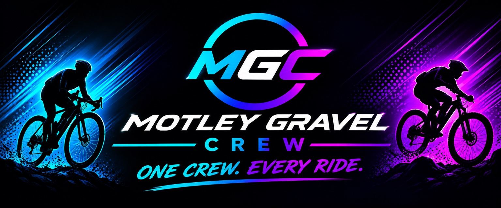

TOP STORY01 / LEAD
The first edition is being prepared.
The latest verified lead story will appear here, with context and a link to the original source.
EXPLORE NEWS ↗
THE MGC EDITORIAL DESK
MGC brings together the stories, racing, equipment and people shaping cycling. Our lead stories will feature verified developments from Western Australia, Australia and around the world.
EXPLORE MGC NEWS ↗YOUR DAILY RIDE READ
A concise daily overview of the important stories, racing, results and technology shaping cycling locally, nationally and internationally.
The latest verified lead story will appear here, with context and a link to the original source.
EXPLORE NEWS ↗Previews, podiums, standings and key results from road, gravel, XCO and XCM.
RACING DESK ↗New bikes, components, equipment and technology explained for riders.
EXPLORE TECH ↗THE CYCLING WORLD
WA racing, clubs, riders, events, cycling businesses and infrastructure developments.
WA COMMUNITY ↗National racing, Australian riders, cycling organisations and industry developments.
AUSTRALIAN RACING ↗Global road, gravel and mountain bike news, major events and governing-body announcements.
GLOBAL RACING ↗THE COMPETITIVE EDGE
Coverage of the major professional calendars, domestic racing and the events shaping competitive cycling.
BEYOND THE PELOTON
From drivetrain developments and tyre technology to power meters, GPS, training platforms and the latest bikes — understand what is new and what it means for riders.
EVERY KIND OF RIDING
MORE THAN A NEWS FEED
Different bikes. Different speeds. Same love of riding. MGC welcomes riders, clubs and cycling groups from across road, gravel and mountain biking.
Connect with the MGC community.ONE CREW.
EVERY RIDE.
PLAN YOUR NEXT START LINE
The MGC calendar will bring together major international races, Australian events and Western Australian club and community rides. Dates will be linked to official event information.
THE RECORD OF THE RIDE
Daily briefs, race reports, news and features will be retained in a growing historical archive, organised by publication date and subject.